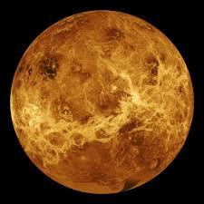
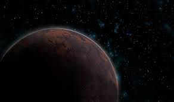

Información general
Los planetas del Sistema Solar forman parte de una estructura astronómica compleja donde cada uno presenta características únicas. Algunos son gigantes gaseosos, como Júpiter y Saturno, mientras que otros, como la Tierra y Marte, son rocosos. Cada planeta tiene distinta composición, tamaño, clima y número de lunas, y juntos ofrecen una increíble variedad de fenómenos naturales.

Es el planeta más cercano al Sol y el más pequeño del Sistema Solar. Tiene temperaturas extremas.

Su atmósfera densa genera un efecto invernadero extremo, convirtiéndolo en el planeta más caliente.
Nuestro hogar, único planeta conocido con vida, agua líquida y una atmósfera equilibrada.

Conocido como el “planeta rojo”, posee grandes volcanes y es el principal objetivo para futura exploración humana.